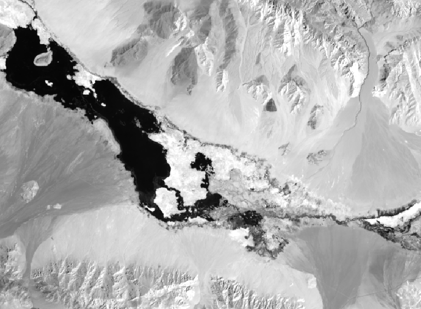
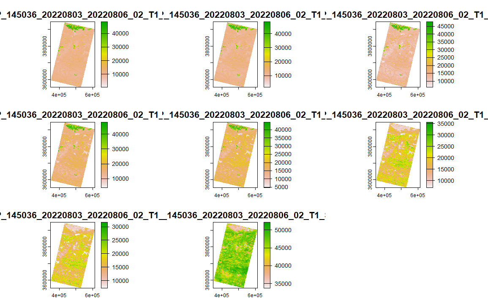
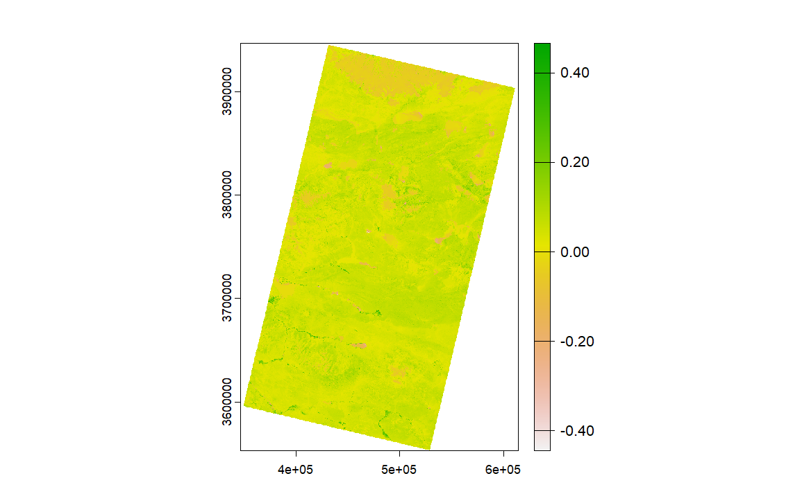
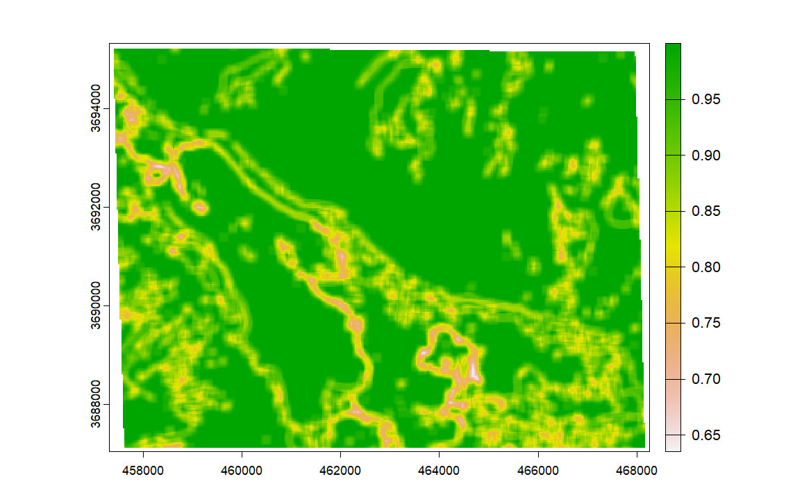

Week3 - Corrections (Data Fusion: Principles and Methods)
Summary
Data Fusion, originally used in military domains, is now a critical part of various fields including multi-source image composition, robotics, unmanned aerial vehicles, image analysis, and more. It involves the integration of multi-source remote sensing image data, enhancing the accuracy, completeness, and reliability of data interpretation.
Principles and Process of Data Fusion
Data fusion in remote sensing images typically follows a two-step process:
1. Preprocessing
Involves geometric correction, atmospheric correction, radiometric correction, and spatial registration of remote sensing images.
2. Data Fusion
Selecting suitable fusion algorithms based on the purpose and level of fusion to synthesize spatially registered data or extracted features, leading to more accurate target representation or estimation.
Classification and Methods of Data Fusion
Data fusion methods for remote sensing images are categorized into:
Pixel-level Fusion: A low-level fusion maintaining high accuracy but with limitations in efficiency and analysis capability.
Feature-level Fusion: A medium-level fusion focusing on extracting and integrating features from different sources.
Decision-level Fusion: The highest level of fusion providing strong fault tolerance and requiring high processing capabilities.
Various data fusion methods include algebraic methods, image regression, principal component transformation (PCT), K-T transformation, wavelet transformation, and IHS transformation.
Week practical
Finally some R related things, so, I’ll do it step by step. Firstly, the two areas chose as follow (It’s just two randomly areas chose around South Asia, looks like most of area are yellow sand):
The process begins with choosing specific areas for analysis, which shows contrasts in the landscape, such as water bodies.

Then merge the Satellite data to combine different spectral bands or time points to create a comprehensive view of the chosen areas. They are quilt confusing, and I’ll figure all bands out in later chapters.

Calculation Normalized Difference Vegetation Index (NDVI). The NDVI values range from -0.40 to 0.40, with green areas indicating healthier vegetation and brown areas indicating less healthy or sparse vegetation. This image suggests that there are a lot of area might be indicative of barren land, rock, or bare soil with little to no vegetation present. The equation to get NDVI is:
\[ NDVI = \frac{NIR- Red}{NIR + Red} \]

Texture Analysis: This step examines the surface roughness or textural patterns of the landscape, which can be critical for classifying different land cover types like soil and water.

Principal Component Analysis (PCA): PCA is a statistical technique used to emphasize variation and bring out strong patterns in a dataset. It transforms the original data into a set of linearly uncorrelated variables known as principal components, with the first principal components accounting for as much of the variability in the data as possible.
Application
Considering data fusion in remote sensing field, a paper I found used Pixel-Level, Decision-Level and Feature-Level fusion techniques (Zhang 2010) to realize it. Pixel-level fusion integrates high-resolution panchromatic data with lower-resolution multispectral data to produce images that combine the best features of both: high spatial resolution and rich spectral information. Feature-level fusion combines features extracted from different sources, such as edges, textures, and other morphological parameters, to enhance classification, object detection, and change detection processes. And decision-level fusion combines the outcomes of multiple classification or detection algorithms to arrive at a final decision, enhancing reliability and accuracy. These techniques enable the extraction of more accurate and detailed information from the Earth’s surface, facilitating better environmental monitoring and algorithm correctness.
As for Atmospheric Corrections, Chavez et al.(Chavez et al. 1996) highlighting its impact for various applications, including vegetation monitoring, urban planning, and climate change studies. It can improve spatial resolution for detecting atmospheric particulates by integrating LiDAR data with optical imagery to enhance the detection of atmospheric particulates and their spatial distribution. This fusion is particularly useful in studying the vertical distribution of aerosols and clouds, providing valuable information for atmospheric correction and climate research. For temporal Data, the fusion of real-time data from multiple sensors, including weather satellites and ground-based observations, supports the development of dynamic atmospheric correction models. These models can adjust for sudden changes in atmospheric conditions, ensuring the accuracy of surface reflectance data for time-sensitive applications. The application of advanced data fusion techniques in atmospheric corrections has led to significant improvements in the quality and reliability of corrected remote sensing imagery.
Reflection
First, it’s incredible how I can take images from satellites, correct them for distortions caused by the camera’s angle and the atmosphere, and then turn them into precise maps of the Earth’s surface.
I delved into data fusion, where the goal is to mix data from different sources to create a clearer, more detailed picture. There are different ways to do this, from mixing pixel by pixel, to looking at features like edges and textures, to making big-picture decisions. It’s like putting together a complex puzzle, with each piece providing more insights into the larger image.
One practical application was analyzing parts of South Asia (India). It’s fascinating to see how areas that mostly looked like yellow sand from afar actually held a lot of details when you zoomed in. Using the Normalized Difference Vegetation Index, or NDVI for short, I could tell where the healthy greenery was and where it wasn’t, which is super useful for understanding the landscape.
Texture analysis not just about colors but also how rough or smooth areas are, which can tell you a lot about the terrain. And when I ran a Principal Component Analysis, it was like finding the hidden patterns in the data. It’s a powerful way to reduce complexity and highlight what’s really important.
Looking forward, though, it’s clear there are challenges ahead. The math behind fusing data from different sources can get tricky and complex. But it’s also an exciting time, with Geographic Information Systems and smarter processing tools making it possible to monitor our planet in real-time.